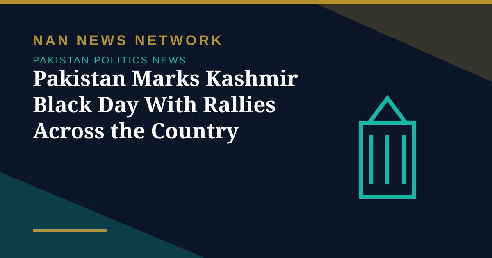

Pakistan Marks Kashmir Black Day With Rallies Across the Country

Rallies and demonstrations were held across Pakistan on Tuesday, October 27, to mark Kashmir Black Day, with participants condemning India's control of Jammu and Kashmir and calling for a peaceful settlement of the dispute through United Nations resolutions. Protests were reported from Peshawar to Muzaffarabad, and from Gwadar to Chitral, according to Associated Press of Pakistan reports.
In Peshawar, Khyber Pakhtunkhwa Governor Faisal Karim Kundi led the main protest rally, which was attended by the governor's advisers, Hurriyat leader Daud Khan Yousafzai, government officials, employees and a large number of students. Participants observed one minute of silence to express solidarity with the Kashmiri people.
What leaders said
Prime Minister Shehbaz Sharif, in a message marking the day, said Pakistan's position on Jammu and Kashmir remained clear, consistent and principled, and that lasting peace and stability in South Asia could not be achieved without a just and peaceful resolution of the dispute in line with the relevant United Nations Security Council resolutions and the aspirations of the Kashmiri people. He said Pakistan would continue to extend moral, diplomatic and political support to the Kashmiri people at every national and international forum.
The prime minister recalled that the landing of Indian forces in Srinagar on October 27, 1947, marked the beginning of what he described as a tragic chapter in the history of Jammu and Kashmir, and said the Kashmiri people had since been denied the realisation of their right to self-determination as affirmed in UN resolutions.
In the National Assembly, Deputy Speaker Syed Ghulam Mustafa Shah said October 27 was observed to condemn India's occupation of Jammu and Kashmir and to express solidarity with Kashmiris seeking the right to self-determination. He said the people and the National Assembly of Pakistan stood with their Kashmiri brethren, and paid tribute to the resilience of the Kashmiri people.
Why October 27 is observed
Pakistan observes October 27 every year as Kashmir Black Day to protest the arrival of Indian troops in Srinagar in 1947. The day is marked by rallies, seminars and official statements, with the government and political parties repeating the call for a settlement based on UN resolutions. Organisers of Tuesday's rallies said the demonstrations were intended to draw the international community's attention to the dispute and to the Kashmiri people's demand for self-determination.
Sources: UrduPoint / Pakistan Point News (APP), October 27, 2026; The Europe Today, October 27, 2026.
More on Pakistan Politics News
- National Assembly Passes Seven Private Members' Bills, Sends Six to Committees
- Pakistan Strongly Condemns Houthi Missile Attacks Near Makkah and Madinah
- Pakistan, Saudi Arabia and Turkiye Reported to Hold Tehran Talks on De-escalation
- Pakistan LPG Shortage Worsens as Iran Border Crossings Close
- Pakistan Ends Machine-Readable Passports and Switches Fully to E-Passports
- Pakistan Calls for a Fairer Global Order at the United Nations